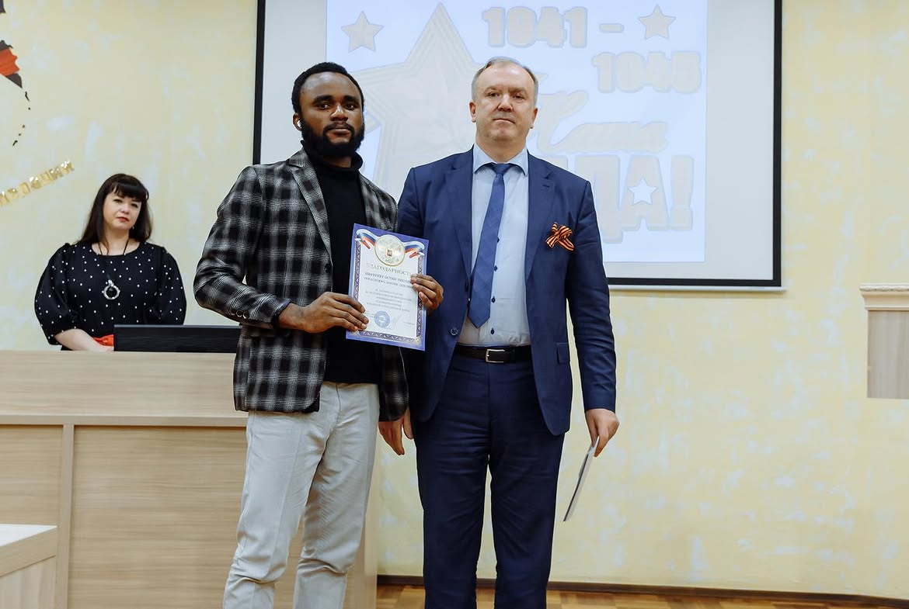
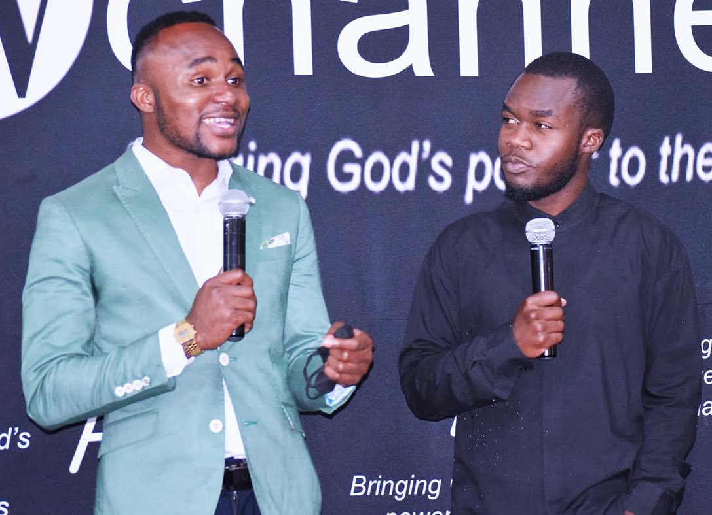

Data Analytics
Cleaning, exploring, and interpreting data to uncover patterns, measure performance, and support better decisions.
- SQL
- PostgreSQL
- Python
- pandas
Data · Business · Media
I’m Nwachukwu Austine, an Information Systems and Technology student combining data analytics, business thinking, media experience, and purposeful communication.

Based in Russia · Open to opportunities
Analytical thinking
✦Visual storytelling
✦Purposeful communication

A clear story behind the numbers
My background in television broadcasting, video production, graphic design, and media operations taught me how to communicate ideas clearly. Today, I bring that same visual awareness to data analytics, business analysis, database work, and digital projects while working with S.H.E. Social, LLC.
I enjoy cleaning complex information, finding the pattern that matters, and presenting the result in a way people can understand and use.
My working toolkit
Cleaning, exploring, and interpreting data to uncover patterns, measure performance, and support better decisions.
Turning findings into focused visuals and explanations that make insights understandable to technical and business audiences.
Building responsive digital experiences with a strong eye for structure, presentation, and user experience.
Projects with purpose
An end-to-end analysis of 15,035 synthetic streaming records, covering data cleaning, exploratory analysis, audience behavior, regional preferences, KPI reporting, visualizations, and business recommendations.
View case study ↗Business Website
A live agency website and growing client-resource system built with HTML, CSS, JavaScript, GitHub, and Netlify.
Community Landing Page
A God-first community website designed to help creative entrepreneurs move from vision to consistent execution.

E-commerce Concept
A responsive Christian apparel storefront concept centered on faith, story, and product discovery.
Event Experience
An elegant event landing page for an Altar of Incense worship night, with details, scripture, and registration content.
One professional story
My work lives at the intersection of technology, communication, and creativity. These experiences strengthen how I present ideas, lead conversations, and connect insight with people.

Academic life has strengthened my discipline, adaptability, and willingness to contribute beyond the classroom while studying Information Systems and Technology.

Speaking experience helps me communicate confidently, respond to an audience, and translate complex subjects into clear messages.

My hands-on background with cameras, broadcast environments, and visual production continues to shape my attention to detail and storytelling.
Faith · Music · Expression
Beyond technology and analytics, I use music to communicate faith, hope, and purpose. It is another expression of the same ability to connect a message with people.
Let’s build something useful
If you are looking for someone who can think analytically, communicate visually, and keep learning, I would be glad to connect.
austinechi.fx@gmail.com ↗